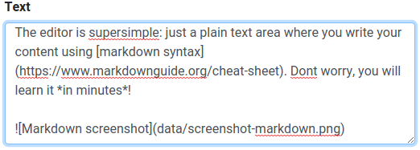
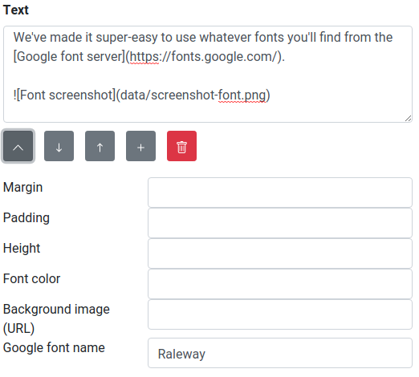

Dummylander is a superduper simple website administration software. If you're planning to host a simple website with just one page Dummylander is for you.
Maybe just need just one simple page for contact information, pricelist or similar compact info? Or a lander page while working with you core site? Read on!
Tired of running installation wizards and uploading nested directory structured? Don't worry! Dummylander is just one PHP file which contains everything: it shows the page and brings you the administration interface.
Dummylander contains an intuitive and simple administration interface which allow you to edit your site content. The editor is responsive, so you can use your laptop, tablet or phone to update your site. No apps or plugins are needed!
The editor is supersimple: just a plain text area where you write your content using markdown syntax. Dont worry, you will learn it in minutes!

We've made it super-easy to use whatever fonts you'll find from the Google font server.

Dummylander is free software (MIT License). This means that you don't have to pay for using it. No ads. No catch. Ever.
Dummylander is currently under development. First sites are online and you can already do all the basic things: edit text, set fonts, upload pictures and documents etc. Check Dummylander GitHub site for the current status.
If you have suggestions or find a bug please open a GitHub Issue!